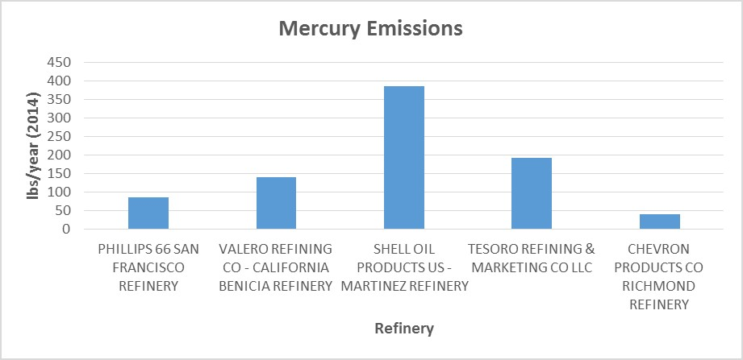

.jpg)
Prediction
Right here is an example/overview of several predictions that alerts you when you are in an area that is harmful to your health based on your location. They are represented through percentages which all determine whether or not the pollution state is low, average, or high. This will be determined by the statistics that arise based on that data
Predicted Toxins
Your current Location: Berkeley, California
Today(Monday): Average ---> 45%
Tuesday: Low ---> 25%
Wednesday: Average ---> 43%
Thursday: Average ---> 44%
Friday: Average ---> 46%
Saturday: High ---> 75%
Sunday: Average ---> 48%
Here are examples of current bar graphs that represent the amount of toxins being emitted into the air that many people are inhaling into their bodies.(Specifically the Bay Area)


 (image 1)Richmond Confidential.org (image 2)Fact Tracker
Analyzing the graphs/scatterplots above, there are some specific statistic elements that support the claim that the majority of the time we see refineries emitt hazardous toxins into the air. Looking closely, you can see there is a pattern of an exponential growth/decay happening by the points within the graph. One Observation that is seen would be the difference between the Bay Area and South Coast. The Bay Area has a high emission rate than those from the South Coast. We can infer that this is really affecting those living in that specific area. Especially those close to the refineries emitting those pollutants.
( Note: The Y axis within the Scatter plot of Emitted Toxins is labeled "Tons per Million Barrels.")
In image #1, the bar graph represents a left-skewed graph that seems to be pretty wide which implies that everyone gets a majority of pollution in their area. Mainly the Bay Area.
As for Image #2, the bar graph seems to be a normal skewed graph and the highest representative is Shell Oil U.S. Refinery